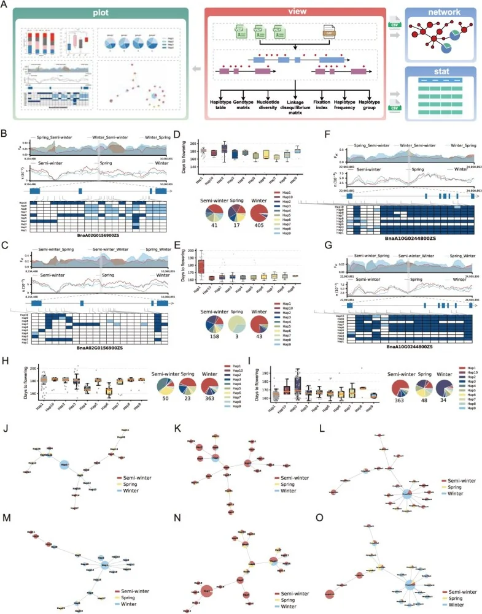
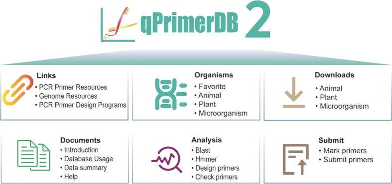

iWebEasy
Low-code database & analysis platform
iWebEasy
We are building low-code database architectures and integrated online analysis platforms for biologists.
In development
I am a Ph.D. student at Peking University, where I explore applications of artificial intelligence in the life sciences under the supervision of Prof. Xingwang Deng and Dr. Hang He. I currently lead the CroAI project.
Previously, I earned dual bachelor’s degrees in Engineering and Agronomy from Yuan Longping College at Southwest University, where I received interdisciplinary training across computing and plant science.

Horticulture Research, 2026, 13(4): uhag018
PMID 42023261 · DOI 10.1093/hr/uhag018
No abstract is available in PubMed. Please see the full text.
@article{li2026hastat,
title={Hastat: mining favorable haplotypes of trait-associated genes for breeding improvement in natural populations},
author={Li, Xiaodong and Wang, Yuhong and Meng, Boyu and Qin, Zhixuan and Zhang, Minghao and Song, Jiaming and Lu, Kun},
journal={Horticulture Research},
volume={13},
number={4},
pages={uhag018},
year={2026},
doi={10.1093/hr/uhag018}
}

Nucleic Acids Research, 2025, 53(D1): D205–D210
qPrimerDB 2.0 provides pre-computed qPCR primer resources for 1172 organisms and an integrated system for primer search, design, checking, marking, and submission.
@article{li2025qprimerdb,
title={qPrimerDB 2.0: an updated comprehensive gene-specific qPCR primer database for 1172 organisms},
author={Li, Xiaodong and Meng, Boyu and Zhang, Zhi and Wei, Lijuan and Chang, Wei and Wang, Yuhong and Zhang, Kai and Li, Tian and Lu, Kun},
journal={Nucleic Acids Research},
volume={53},
number={D1},
pages={D205--D210},
year={2025},
doi={10.1093/nar/gkae684}
}
We are building low-code database architectures and integrated online analysis platforms for biologists.
In development
An in-depth, professional, and technically rigorous video and long-form writing community for AI4S, focused on research, technology, and practice at the intersection of AI and the life sciences.
wangyuhong.cnNone at this time.